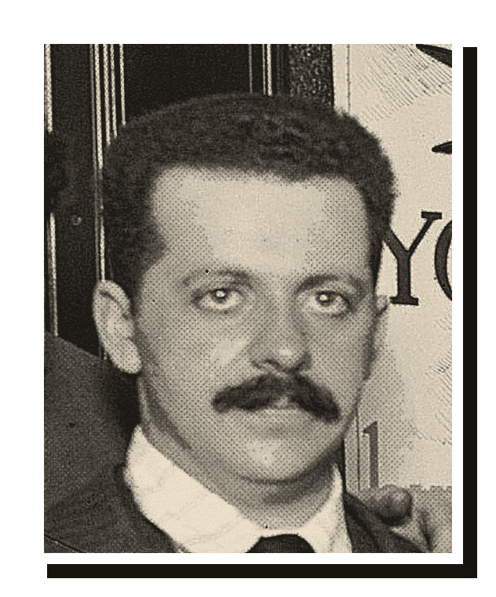
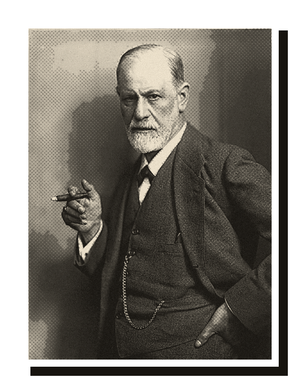
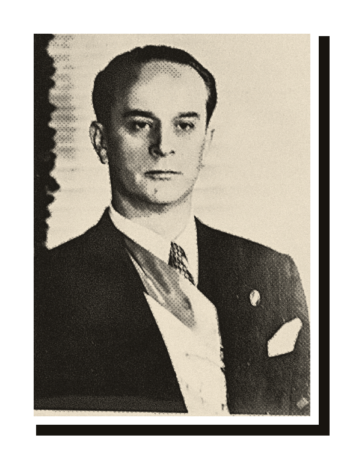
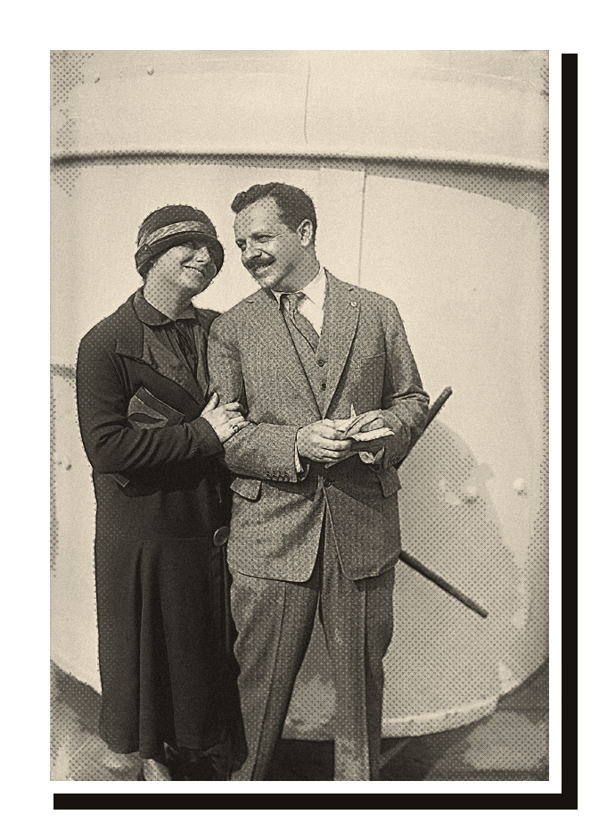
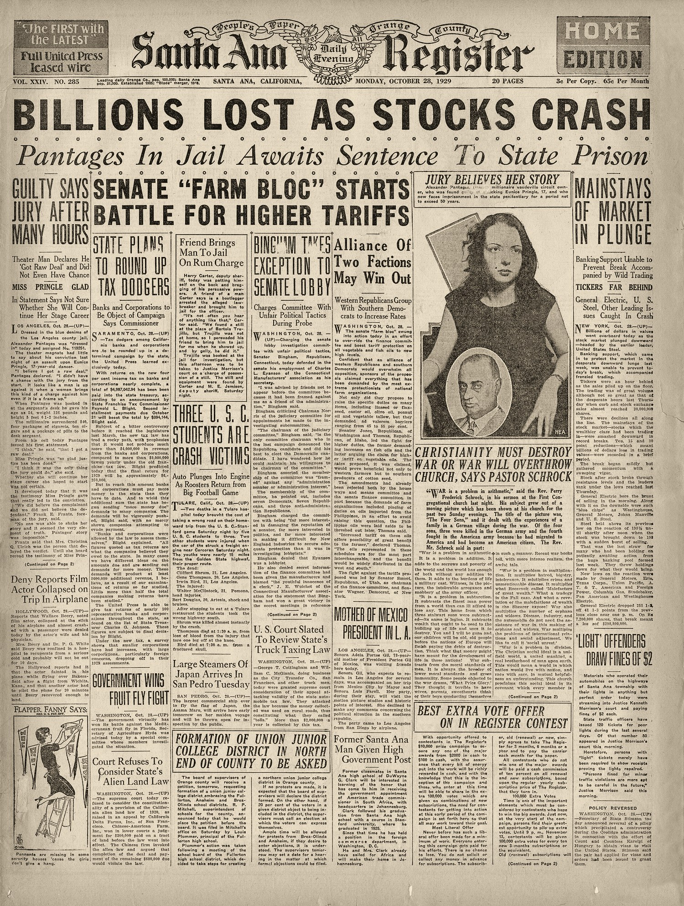

Nueva York · 31/03/1929
Foto de 1910 (referencia) · Library of Congress
Aviso de Lucky Strike · 1929
CONFIRMADO
Theatre Magazine, dic. 1929 · dominio público
FREUD


Retratos: Bernays, 1917 · Freud, M. Halberstadt, 1921 · dominio público
Truco 1 · Identidad
ANÁLISIS
Theatre Magazine, dic. 1929 · dominio público
Truco 1 · Identidad
Foto: N. FaLon / Pexels
Truco 2 · Autoridad
Foto: H. Santos / Pexels

Truco 3 · La historia
Mapa: dominio público · Retrato de J. Árbenz, 1951
CIA · documento desclasificado
CONFIRMADO
CIA, liberado por FOIA en 1975 · dominio público
1928

Propaganda
EDWARD L. BERNAYS · 1928
DIJO
Foto: Bernays y Doris Fleischman, 1923 · dominio público

1929 → hoy
Santa Ana Register, 28/10/1929 · Orange County Archives (CC BY 2.0)
Hoy · Truco 1
ANÁLISIS
Foto: A. Navlakha / Pexels
Hoy · Truco 2
Foto: Mizuno K / Pexels
Hoy · Truco 3
Foto: I'm Zion / Pexels
Cambridge Analytica · 2018
CONFIRMADO
FUENTE · Facebook — 04/04/2018 · Foto: B. Hamer / Pexels
1929 · un desfile y los diarios
Hoy · tu pantalla
Foto: D. Grey_Owl / Pexels
TRAMA
FUENTES EN LA DESCRIPCIÓN